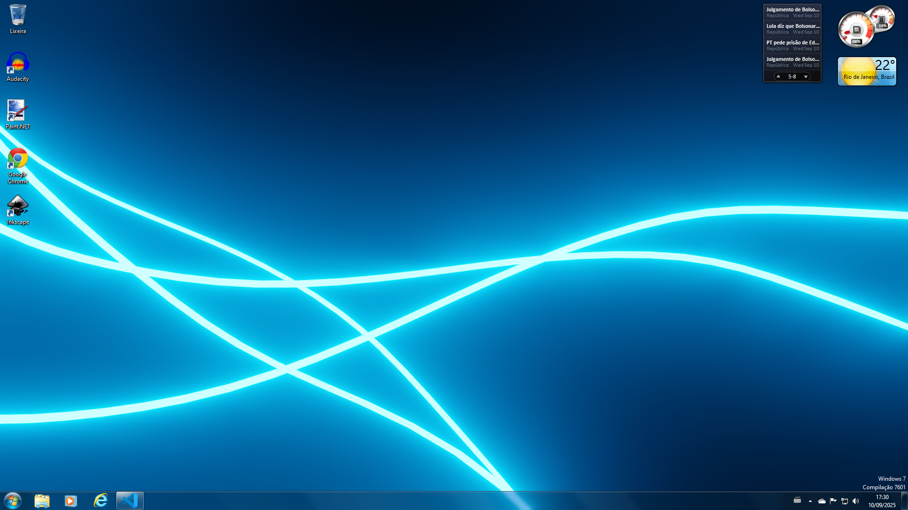

Hello, my name is Felipe Silva (also known as Veira24922 on GitHub), I'm ... years old, Male (He/Him) gender, which I live in Brazil.
Hello, my name is Felipe Silva (also known as Veira24922 on GitHub), I'm ... years old, Male (He/Him) gender, which I live in Brazil.
Something I would do:
• Watch YouTube videos while being bored
• Do something with HTML/CSS/JS
What I actually like:
• Open-source software (Due to not having limits/payments)
• Eating pizza (Of course, it's delicious!)
My favourite OS (Operating System) is "Windows 7", which I modded my Windows to look like that. Also, here's a screenshot of it:

Wallpaper currently made in Blender
Since it's the first time creating a page on GitHub, I should add more things in the future.